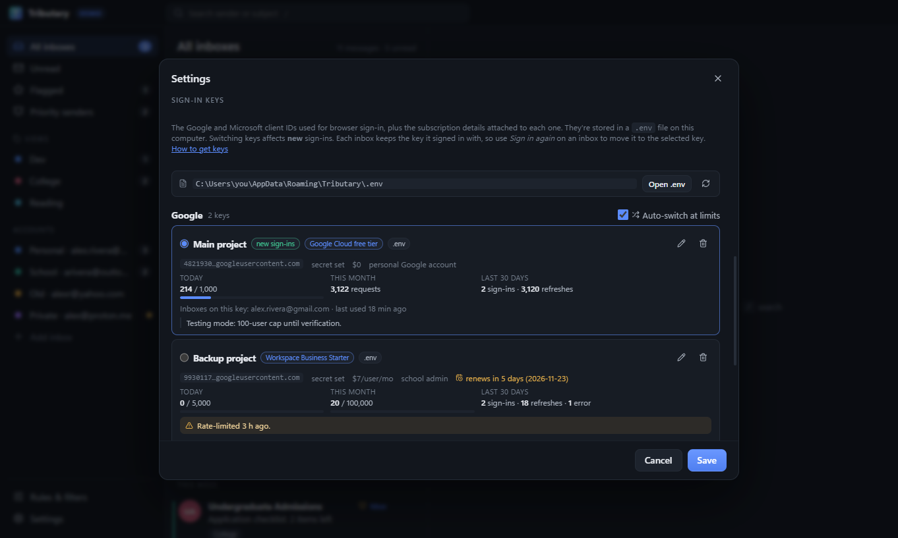

Setup guide
Every provider below speaks IMAP, and Tributary uses it for all of them. The difference is how you log in. Most providers no longer accept your normal password from third-party apps, so you'll create an app password (a separate password just for Tributary) or sign in through your browser.
Installing
Download the file for your computer from Releases:
- Windows 10/11:
Tributary-Setup-x.y.z.exe. - Mac with Apple silicon (M1 and later):
Tributary-x.y.z-arm64.dmg. Mac with Intel:Tributary-x.y.z-x64.dmg. Not sure? Apple menu → About This Mac shows “Chip: Apple M…” or “Processor: Intel”. - Linux: the
.AppImageruns on any distro; the.debis for Debian and Ubuntu.
The builds aren't code-signed yet, so your system warns you the first time:
- Windows: on “Windows protected your PC”, click More info → Run anyway.
- macOS: drag Tributary to Applications and open it. When macOS blocks it, open System Settings → Privacy & Security, scroll down and click Open Anyway. If macOS says the app “is damaged”, run
xattr -dr com.apple.quarantine /Applications/Tributary.appin Terminal and open it again. - Linux:
chmod +x Tributary-*.AppImageand run it, orsudo apt install ./Tributary-*.deb.
Updating
When a new version is out, Tributary shows a banner; Settings → About → Check for updates checks right away. Download the new installer and run it over the old one. Your inboxes, rules, settings and sign-in keys are kept. The check only asks GitHub for the latest version number; turn it off with Tell me when a new version is out in Settings.
Start at login
On Windows and macOS, Settings → Start Tributary when I sign in starts it in the tray, so notifications work without opening the window. You can also turn it off in Task Manager → Startup apps (Windows) or System Settings → General → Login Items (macOS); Settings follows what you choose there.
Gmail
- Turn on 2-Step Verification for the Google account. App passwords don't exist without it.
- Open myaccount.google.com/apppasswords, name it “Tributary” and copy the 16-character password.
- In Tributary, choose Add inbox → Gmail, enter your address and paste the app password.
IMAP access is on by default for personal Gmail accounts. School and work (Google Workspace) accounts may have app passwords turned off by an admin. If so, use Sign in with Google once it's set up (see browser sign-in).
Outlook, Hotmail, Live
Microsoft turned off password logins for IMAP on consumer accounts, so Outlook only works through browser sign-in. Choose Add inbox → Outlook and click Sign in. Your browser opens to Microsoft's login page. Tributary never sees your password; it receives a token it can use to read your mail.
Yahoo Mail
- Go to Account Security.
- Choose Generate app password, name it “Tributary” and copy it.
- Add it under Add inbox → Yahoo Mail.
iCloud Mail
- Sign in at account.apple.com → Sign-In and Security → App-Specific Passwords.
- Generate one and add it under Add inbox → iCloud Mail. Use your full
@icloud.comaddress.
AOL Mail
Same as Yahoo. In AOL Account Security, use Generate app password.
Proton Mail
Proton encrypts mail end-to-end, so it can't offer plain IMAP from its servers. Instead it ships Proton Mail Bridge, a small program that runs on your computer, decrypts your mail locally and serves it over IMAP on 127.0.0.1. Bridge needs a paid Proton plan.
- Install Bridge, sign in and leave it running.
- In Bridge, open your account's Mailbox configuration. Copy the IMAP username and the Bridge password, not your Proton password.
- In Tributary choose Add inbox → Proton Mail (via Bridge). The host (
127.0.0.1) and port (1143, STARTTLS) are filled in for you.
127.0.0.1 / localhost). Every other server must present a valid certificate.Any other IMAP server
Fastmail, Zoho, GMX, a school or company server: choose Other IMAP server and enter the host and port from your provider's help page. Port 993 with TLS is the common setup. Turn TLS off only for STARTTLS servers on port 143.
Rules and notifications
Get notified by one sender
Open any email from them and click Notify me in the toolbar. From then on, every new email from that address on any account sends a desktop notification. Click again to stop.
Sort senders into views
Click Make rule on a message, or open Rules & filters in the sidebar. Some examples:
- College: sender domain ends with
.edu, then put in view “College” and notify - Dev: sender domain ends with
github.com, then put in view “Dev” - Receipts: subject matches regex
(receipt|order|invoice), then view “Receipts” and mark as read - Newsletters: match any of sender contains
newsletterorsubstack, then keep out of All inboxes
Rules are evaluated live. Editing a rule re-sorts your existing mail right away, not just new messages.
Browser sign-in setup
Browser sign-in uses OAuth 2.0 with PKCE and a one-time loopback redirect on 127.0.0.1. You register Tributary once with each provider, and each registration becomes a sign-in key. Add it under Settings → Sign-in keys → Add key. Gmail then defaults to one-click Sign in with Google. The steps for creating keys are below.
Sign-in keys, subscriptions and switching
Keys are saved in a .env file on your computer (%APPDATA%\Tributary\.env on Windows). Open .env in Settings opens it. You can keep several keys per provider and attach each one's subscription details: plan, cost, daily and monthly request limits, renewal date, billing account and notes.
GOOGLE_CLIENT_ID=1234-abc.apps.googleusercontent.com
GOOGLE_CLIENT_SECRET=GOCSPX-...
GOOGLE_CLIENT_LABEL="Main project"
GOOGLE_CLIENT_PLAN="Google Cloud free tier"
GOOGLE_CLIENT_DAILY_LIMIT=1000
GOOGLE_CLIENT_RENEWS=2027-01-31
GOOGLE_CLIENT_ID_2=5678-def.apps.googleusercontent.com
GOOGLE_CLIENT_LABEL_2=Backup
MICROSOFT_CLIENT_ID=00000000-0000-0000-0000-000000000000
- Each key shows its usage for today, this month and the last 30 days against its limits, plus any recent errors or rate limits.
- Pick which key new sign-ins use. With Auto-switch at limits on, Tributary moves new sign-ins to the next key with room once the picked key hits a limit or gets rate-limited.
- Inboxes you've already connected keep using the key they signed in with, because a sign-in only works with the key that created it. To move an inbox to the selected key, click Sign in again on it.
- Limits count the requests Tributary makes with a key: sign-ins and token refreshes, about one per inbox per hour. Google and Microsoft count reading and syncing mail against each mailbox, not against the key.
Microsoft (Outlook)
- Open Microsoft Entra admin center → App registrations → New registration.
- Supported account types: Personal Microsoft accounts (add “and any organizational directory” to also support school and work accounts).
- Redirect URI: platform Public client/native (mobile & desktop), value
http://localhost. - Under API permissions add Office 365 Exchange Online → IMAP.AccessAsUser.All (delegated), plus
offline_access,openidandemail. - Copy the Application (client) ID.
Google (optional; app passwords work without it)
- In Google Cloud Console, create a project and set up the OAuth consent screen. While it's in Testing, add yourself as a test user.
- Credentials → Create credentials → OAuth client ID → Desktop app.
- Copy the client ID and secret. Google documents desktop-app secrets as not confidential.
https://mail.google.com/ scope is restricted. While the consent screen stays in Testing mode, refresh tokens expire after 7 days and you'll be asked to sign in again. For personal use, app passwords avoid this.Staying signed in
- After you sign in, Tributary keeps the provider's long-lived refresh token (or your app password), encrypted with your system's keystore (Windows DPAPI, macOS Keychain or Linux libsecret). It never stores your real account password, and it never saves cookies.
- Short-lived access tokens refresh in the background before they expire, so you stay signed in across restarts and reboots.
- If a provider revokes access (you changed your password, removed the app from your Google/Microsoft account, or a Google test-mode token hit its 7-day limit), Tributary stops trying instead of hammering the server with bad credentials. You get one notification, a banner in the app, and a Sign in again button in Settings. Your rules, colors and cached mail are kept.
Troubleshooting
- “Login rejected” almost always means the normal password was used instead of an app password, or the app password has a typo. Spaces in Google app passwords don't matter.
- Red dot next to an account: a network problem. Tributary retries on its own, with increasing delays up to 5 minutes.
- Amber dot / “needs sign-in”: the credentials were rejected. Use Sign in again or enter a new app password in Settings.
- Proton “connection refused”: Bridge isn't running.
- No notifications on Windows: check Settings → System → Notifications and make sure Tributary is allowed and Focus is off.
Uninstalling
Tributary keeps everything in one folder on your computer and has no account to close. Your email stays with your providers; removing Tributary never deletes any mail.
- Windows: Settings → Apps → Installed apps → Tributary → Uninstall, or Uninstall Tributary… in Tributary's own Settings. The uninstaller asks whether to delete your data too, and always removes the start-at-login entry.
- macOS: erase your data first (below), then quit Tributary and drag it from Applications to the Trash.
- Linux: erase your data first, then run
sudo apt remove tributary, or delete the.AppImage.
Erase all data (Settings → Remove Tributary) signs out of every inbox, revokes Google sign-ins, turns off start at login, and deletes your saved passwords and sign-in tokens, rules, cached mail, settings and sign-in keys. Then Tributary closes. To delete the folder by hand instead, it's here:
- Windows:
%APPDATA%\Tributary - macOS:
~/Library/Application Support/Tributary - Linux:
~/.config/Tributary
Revoke access at your providers. Deleting files on your computer doesn't stop a provider accepting what it gave Tributary. Tributary revokes Google sign-ins itself and tells you where to go for the rest:
- Microsoft sign-in: account.live.com/consent/Manage → Tributary → Remove.
- Gmail app password: myaccount.google.com/apppasswords.
- Yahoo, AOL, iCloud: delete the app password you made, in the account's security settings.